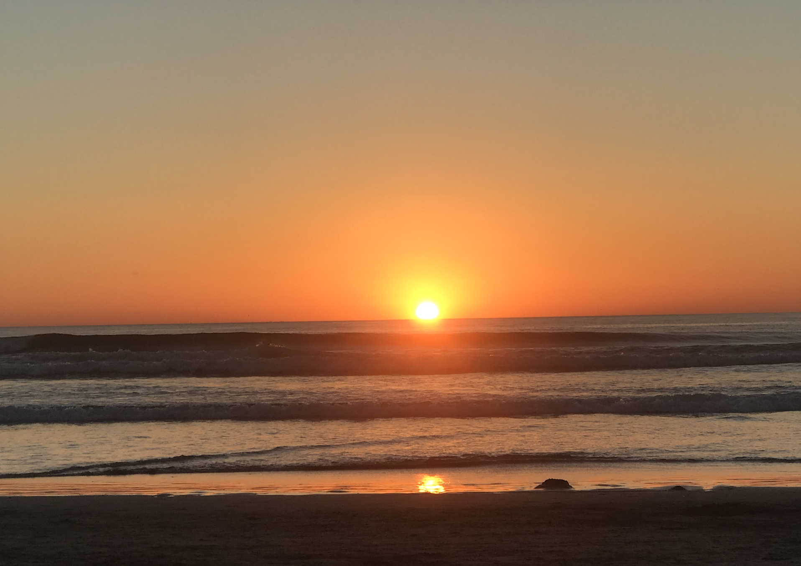

Day 1: 4/7/21
Journal Entry
Highlights
- going to the beach for a little bit after classes
- eating a lot of chicken wings that my apartment mate made
- did some light exercise in my room in the morning
Lowlights
- having long day of classes
- did not have much time to make myself breakfast
Today I spent a lot of time trying to organize my schedule and all the task I have to do in my adgenda for all my classes and for my career. after I finish setting up my agenda, I got stressed by the sheer amount of workload that I have everyday. I also got stressed because of the upcoming deadlines for programs that I am applying for which requires a Statement of Purpose and Letters of Rec. I feel like as a junior I really want to have an easy year but due to COVID-19 and upperdivision classes, I don't think that this quarter will be one.
Agenda for the day:
- Work on coding practice problems
- Work on the assigned esearch Homework
- Work on ECE 111 HW1
- Finish MGT 172 Homework
- Work on my statement of purpose
Day 2: 4/8/21
Journal Entry
Highlights
- got myself some boba from ding tea
- went and bought myself some gummies and cookies
- watched an episode of the Kdrama Mouse with my friends
Here is a link to watch the trailer if interested
Lowlights
- Had a lot of meetings with Research groups and mentors
- Had a 3 hour lecture on zoom and it was very tiring
Today was a very eventful day. I woke up before my alarm rang around 9:00. It was a very calming day. I went outside in the patio and took in some vitamin D by soaking in the sun. Today there was no class so I had some free time to go. Overall, it was a slow paced and relaxing day. I hope that there will be more days similar to this in the upcoming future.
The song that I listened to today is Lighters by Bruno Mars.
Agenda for the day:
- Go grocery shopping to get stuff to cook for the week
- Meet up with mentor from the program
- Continue working on Statement of Purpose
- Study for MGT 181 Quiz that is on Monday
- Work on writing a discussion response for MUS15
Day 3: 4/9/21
Journal entry
Highlights
- Finished my quiz
- Slept in and woke up in the afternoon
- Had some cake and cookies for dessert
Lowlights
- Was alone in the apartment and had no one to talk to
- Was very bored throught the day
Today was a very productive day. I did all my homework and worked on all my assignements.
But one sad thing was that since I dont have a car I was stuck at home and everyone of my apartment mates
were out having fun.All of them went on very sponatneous trips up to LA from SD with their significant other
while I was working and taking classes at home. I felt very sad and lonely. But I ended up getting free time and
decided bake some cookies for myself. Overall, I felt like today we a very hardworking day.
Down below I have a short clip of some of my baking endevors.
Agenda for the Day:
- Finish up CSE 110 Lab 2
- Do canvas Quiz
- Clean up the room
- Finish up the statement of purpose